1. Festlegen des Standorts
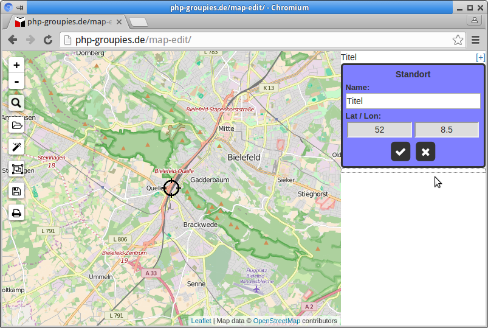
Als erstes muss der Punkt festgelegt werden für den der Umgebungsplan erstellt werden soll. Zu beginn wird dazu ein blau unterlegtes Formular in der Seitenleiste und eine Fadenkreuz-förmige Markierung auf der Karte eingeblendet.
Die Markierung kann auf drei verschiedene Arten zur gewünschten Position bewegt werden:
-
durch direktes Ziehen mit der Maus kann die Markierung an die gewünschte Stelle verschoben werden
-
bei Bewegungen der Karte wird die Markierung nach jeder Bewegung auf den aktuellen Mittelpunkt des sichtbaren Bereichs verschoben
-
wenn ein Objekt über die Suche ausgewählt wird dann wird auch die Markierung auf diese Position gesetzt
Sobald die gewünschte Position gewählt ist kann das Formular mit [/] geschlossen werden. Die Position der Markierung wird damit fixiert. Wenn die Markierung später noch einmal verschoben werden soll kann das Formular durch anklicken der Markierung erneut geöffnet werden.
In der fertigen Umgebungskarte wird die Position mit einem roten Kreis gekennzeichnet:
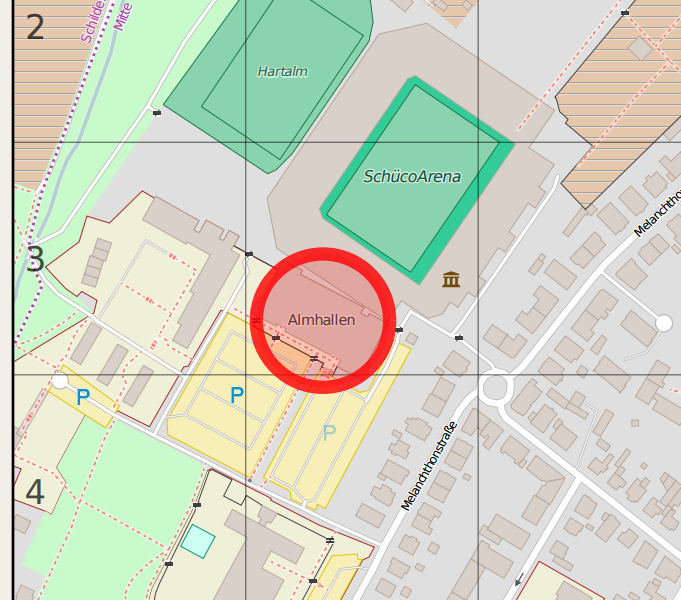
2. Die Karten-Überschrift
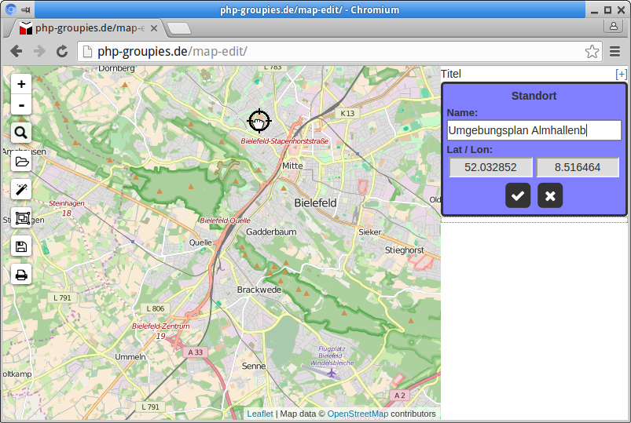
Über das anfangs eingeblendete Formular wird auch die Überschrift der Karte festgelegt.
Auf der fertigen Karte erscheint diese links oben in der Titelleiste neben dem "Refugees welcome" Logo:
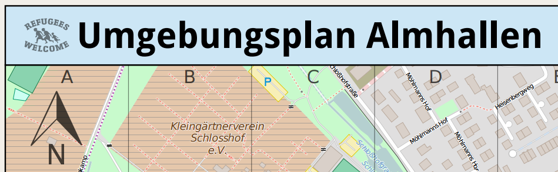
3. Kategorien anlegen
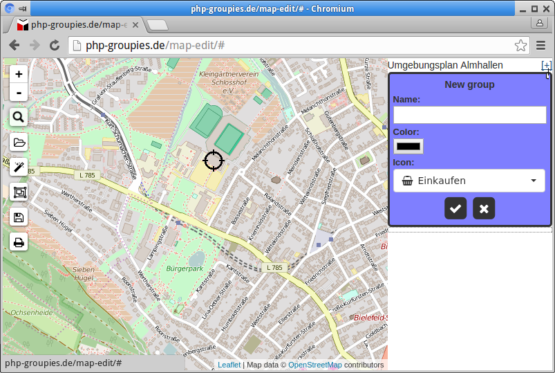
Die Markierungen auf der Karte werden in Kategorien mit jeweils eigener Überschrift verwaltet. Mit dem [+] in der rechten oberen Ecke können neue Kategorien angelegt werden.
Jede Kategorie bekommt eine Überschrift, eine Farbe für die Markierungen dieser Kategorie und ihren Überschriftsbalken, und ein Icon das ebenfalls im Überschrifts-Balken angezeigt wird.
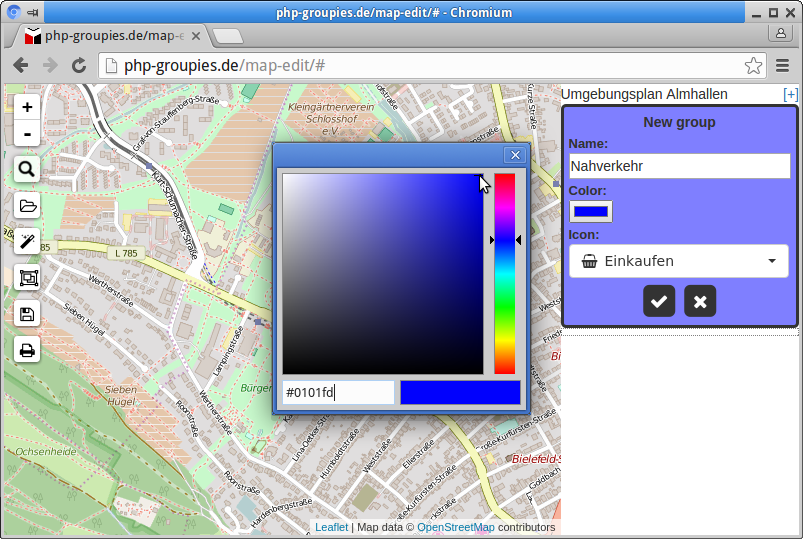
Die Farbeingbe sieht je nach Browser unterschiedlich aus, hier sehen wir das Eingabewerkzeug in Google Chrome …
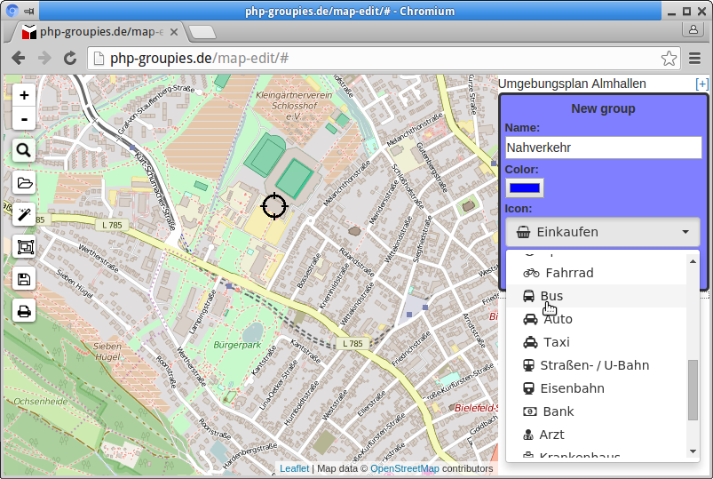
Das Icon kann aus einer Liste vorgegebener Symbole ausgewählt werden.
4. Markierungen anlegen
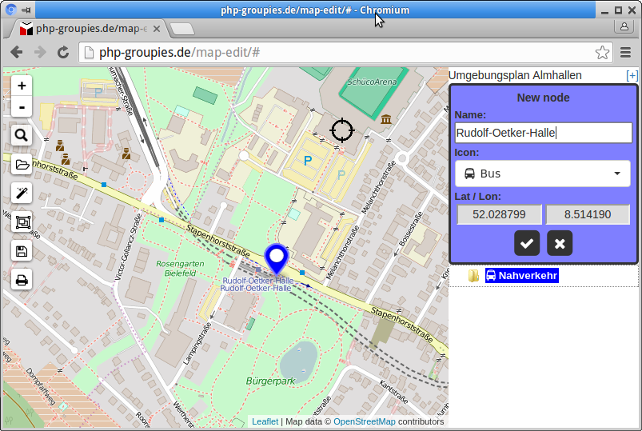
Nachdem mindestens eine Kategorie angelegt ist können nun die eigentlichen Markierungen angelegt werden. Hierzu kann mit der rechten Maustaste (oder mit langem Drücken auf Handys oder Tablets) ein Kontext-Menü aktiviert werden, in diesen gibt es dann einen Menüpunkt "Add POI".
Jede Markierung bekommt ihren eigenen Titel und ihr eigenes Symbolbild für die Seitenleiste.
Die Koordinaten für die Markierung werden zwar im Formular mit angezeigt, können aber nur durch Positionierung des Markierungs-Symbols geändert werden. Die Markierung wird zunächst in der Mitte des aktuellen Kartenausschnitts positioniert und kann dann, wie bereis oben beim Standort-Fadenkreuz beschrieben, an die richtige Position verschoben werden.
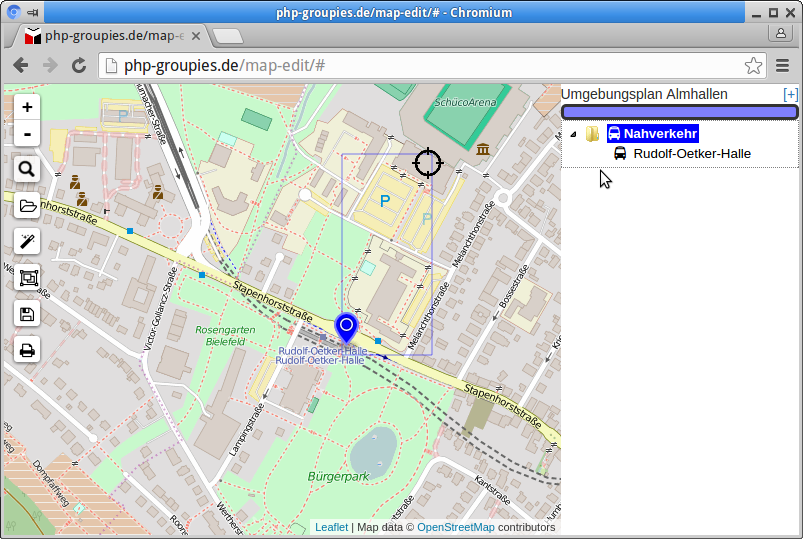
Nachdem mindestens eine Markierung erstellt wurde erscheint auf der Karte ein blau umrandetes Rechteck. Dieses zeigt den Bereich an der später auf jeden Fall auf der gedruckten Karte erscheinen wird. Da der Bereich für die eigentliche Karte im Druck in etwa quadratisch ist werden später noch Bereiche links und rechts bzw. ober- und unterhalb dieses Rechtecks mit auf der gedruckten Karte erscheinen, je nachdem ob der umrandete Bereich zu hoch oder zu flach ausgefallen ist.
5. Wichtige Punkte automatisch ermitteln
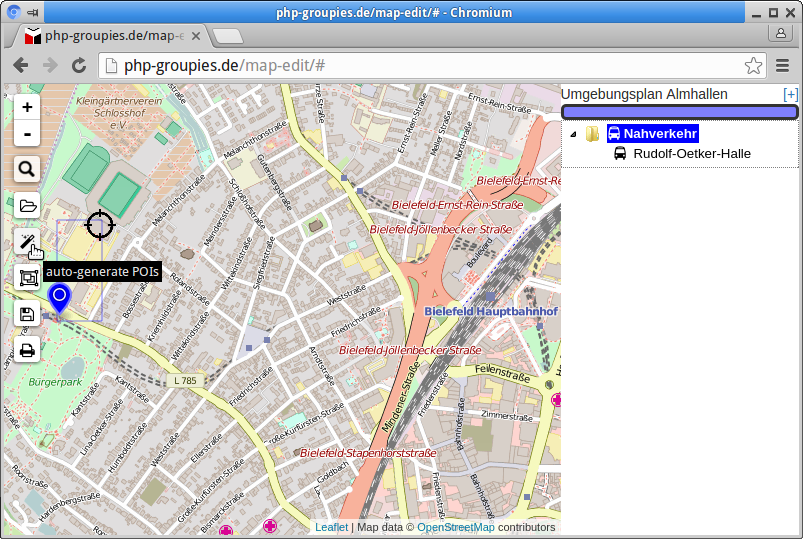
Mit dem "Zauberstab"-Symbol können einige wichtige Punkte automatisch ermittelt werden statt sie von Hand einzutragen, dies sind zur Zeit:
-
Krankenhäuser
-
Apotheken
-
Supermärkte
-
Kirchen (nur evangelische und katholische) und Moscheen
Es werden alle entsprechenden bekannten Einträge für den gerade sichtbaren Kartenbereich ermittelt, dies kann je nach Größe des Kartenausschnitts ein paar Sekunden dauern.
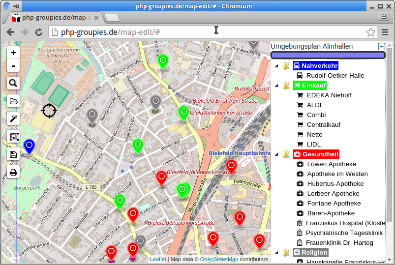
Das Endergebnis kann dann zB. so aussehen.
6. Punkte bearbeiten
Inbsesondere nach der automatischen Ermittlung, aber natürlich auch sonst, kann es vorkommen dass man Markierungen wieder entfernen möchte. Hierzu gibt es zwei Möglichkeiten:
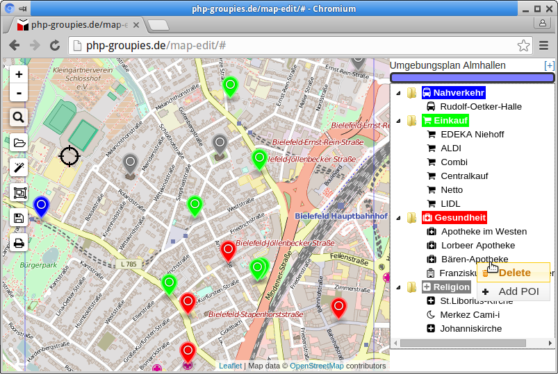
Jeder Eintrag hat ein eigenes Kontext-Meü (über Rechtsklick bzw. langes Drücken auf Touchscreens) über dass der Eintrag wieder gelöscht werden kann. Hiermit ist sowohl das Löschen einzelner Einträge möglich als auch das Entfernen ganzer Kategorien incl. aller Markierungen dieser Kategorie.
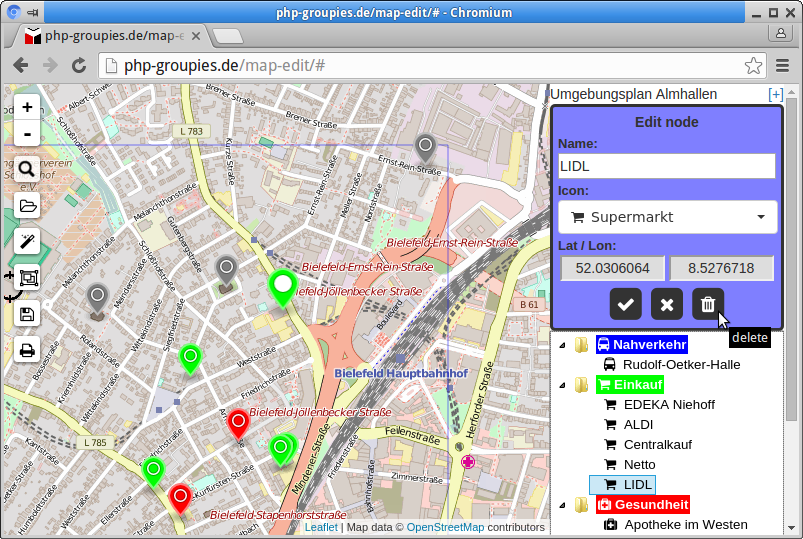
Durch einfaches Anklicken bzw. -tippen erhält man ein Bearbeitungsmenü für den gewählten Eintrag. Hier können nun Text, Symbol, und Position des Markierungs- symbols verändert werden, es ist über das Mülltonnen-Symbol auch möglich einen Eintrag komplett zu entfernen.
Weiterhin ist es möglich per Drag&Drop einzele Markierungen, oder auch ganze Kategorien, innerhalb der Baumdarstellung an eine andere Position zu verschieben.
7. Alle Markierungen anzeigen
Mit Hilfe des "Bilderrahmen"-Symbols in der Werkzeugleiste wird der aktuelle Kartenausschnitt so gewählt dass alle aktuell vorhandenen Markierungen sichtbar sind. Hierzu wird der Kartenausschnitt automatisch verschoben und der Vergrößerungsfaktor angepasst.
8. Speichern und Laden
Diese beiden Funktionen sind noch nicht wirklich vorhanden.
Mit dem "Disketten"-Werkzeug wird der aktuelle Kartenzustand als Datei "map-edit.txt" in das Download-Verzeichnis des Browsers heruntergeladen. Eine Auswahl des Dateinamens oder des Speicherorts ist nicht möglich. Die Speicherung erfolgt nur lokal und nicht auf dem Server.
Mit Hilfe des "Ordner öffnen" Werkzeugs wird es möglich sein einen einmal gespeicherten Zustand wieder zu laden. Zur Zeit ist hier aber einfach nur ein bestimmter Zustand hinterlegt (Orte in der Umgebung der "Almhallen" im Bielefelder Westen), die Auswahl einer eigenen Datei ist hier noch nicht möglich.
9. Karte erstellen

Wenn alle gewünschten Markierungen eingetragen sind kann mit dem "Drucker"-Werkzeug die Erstellung einer Druckdatei angestoßen werden. Diese wird als PDF für das Papierformat DIN-A1 (query) erstellt und automatisch heruntergeladen.
In Zukunft soll hier auch noch die Möglichkeit hinzukommen andere Dateiformate (SVG, PNG) zu wählen.